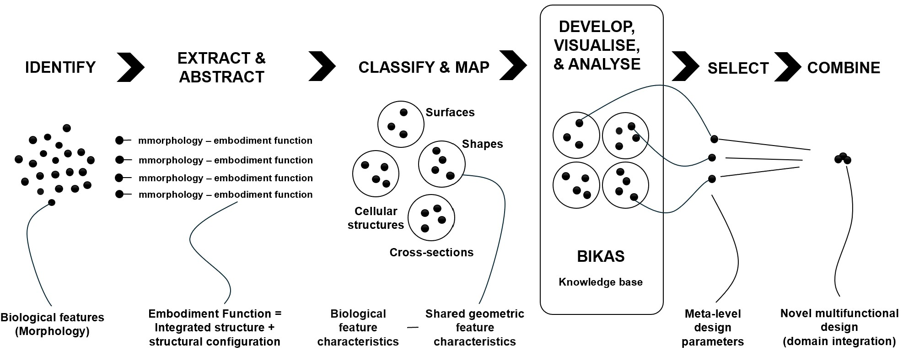

METHODOLOGY
The MBID ideation system integrates the DID / xDID methodology with BIKAS knowledgebase.
Figure 4 illustrates the core components of the system, covering identification, extraction and abstraction, classification and mapping, develop–visualise–analyse, selection, and combination.

Fig 4: Illustration of the key components of the ideation system
1. IDENTIFY
Identifying the organisms exhibiting various functions through their
morphological features by drawing information from published articles and case studies in scientific literature.
2. EXRACT AND ABSTRACT
Each biological (morphological) feature is meticulously mapped to its corresponding function and the tissue (material) from which it originates.
Furthermore, the embodiment function achieved by a feature is understood as a blend of its integrated structure and its structural strategy (configuration).
2.1 EMBODIMENT FUNCTION
The embodiment function is a synergistic outcome of an integrated structure and its structural strategy.
Figure 5 is a schematic illustrating the embodiment function of a lotus leaf in repelling water.
This function results from a combination of micro/nano projections (integrated structure)
on the leaf's surface and the arrangement of these micro/nano structures (structural strategy).
The material composition, such as the wax layer, also plays a crucial role in this function.

Fig 5: Lotus leaf's repel water (superhydrophobocity) is a result of the combination of
its integrated micro/nano surface structures and the stratergy (configuration/arrangement) of the micro/nano structures.
(Pictures of biological organisms from wikimedia commons)
Integrated structure refers to the physical description of a multiscale structure.
This includes details like micro/nanostructure, macrostructure, and even the presence of features like wax layers.
Structural strategy defines the integrated structural configuration. This encompasses aspects such as the arrangement, packing,
or orientation of micro/nanostructures, symmetry, asymmetry, or tessellation patterns. It also accounts for
changes in structural configuration due to external stimuli,
such as the erection of scales or a change in skin compliance,
which occur when other elements interact with the structure.
Table 1 is an example of the lotus leaf's morphology contributing to its exhibited repel water function.
Table 1: Embodiment function as a combination of integrated structure and structural stratergy
| Biological Feature |
Embodiment Function |
Integrated Structure |
Structrual Configuraiton |
| Micro/Nano projections (Lotus leaf). |
Repel Water Droplets. |
Microstructures with a wax layer and pointed in shape. |
Arrangement: The random arrangement of micro perturbances. |
3. CLASSIFY AND MAP
The morphological features are identified, abstracted, mapped,
and classified based on their shared morphological (geometric) characteristics, referred to in this research as Domains.
These Domains represent overarching architectural (geometric) designations that guide the classification process and include: Surfaces, Cellular Structures,
Cross-sections, and Shapes. The domain set is intentionally expandable, allowing new categories to be introduced as the system evolves.
The Table 2 is an example of the abstraction & mapping and classification of the Lotus leaf's morphology.
The Figure 6 illustrates a classification system for morphological features, categorizing them into distinct domains based on their primary geometric characteristic or designation.
Table 2: Abstraction, classification, and mapping of the lotus leaf's morphology to its embodiment function,
including integrated structure, structural strategy, feature characteristics,
tissue/material, and the domain to which it belongs.
| Biological Feature |
Embodiment Function |
Integrated Structure |
Structural Strategy |
Morphological feature characteristic |
Tissue/Material |
Domain |
| Micro/Nano projections (Lotus leaf). |
Repel Water Droplets. |
Microstructures with a wax layer and pointed in shape. |
Arrangement: The random arrangement of micro perturbances. |
Body/Skin texture (Plants) |
Epidermal tissue (Micro-papillae and epicuticular wax) |
Surfaces |
 Fig 6: The classification of biological features by their shared or a common geometric characteristic or designation (domains).
(Pictures of biological organisms from wikimedia commons)
Fig 6: The classification of biological features by their shared or a common geometric characteristic or designation (domains).
(Pictures of biological organisms from wikimedia commons)
4. DEVELOP, VISUALISE AND ANALYSE
The BIKAS knowledge base within the MBID ideation system currently comprises 60 biological features, abstracted, classified, and mapped according to shared geometric characteristics, and continues to expand.
To support intuitive exploration, these features are visualised using tree dendrograms, enabling systematic selection and combination
5. SELECT
In nature, multiple features can share similar geometric characteristics and deliver the same function.
For example, both shark skin and dolphin skin contribute to drag reduction. When selecting between such alternatives, MBID applies meta-level design parameters and explicit design criteria.
Table 3 presents the quantitative parameters used to discriminate between features with comparable functions and overlapping geometric characteristics or domains.
Criterion 1: For multifunctional applications where one function involves anti-adsorption,
absorption, repulsion, or reduction, select features with a lower total interaction area for combination.
Criterion 2: For multifunctional applications where one function involves adsorption,
absorption, or attraction, select features with a higher interaction area for combination.
5.1 QUALITATIVE PARAMETERS
In addition to quantitative parameters, users may apply qualitative criteria, including the intended environmental context, to guide feature selection.
Designs for arid regions, for instance, can prioritise environment-specific biological adaptations.
These meta-level design parameters represent an initial baseline and will be extended as the system develops.
Table 3: Meta-level design parameters for selection for each domain
| Domain |
Meta-level design parameters |
| Surfaces |
Interaction area |
| Cellular Structures |
Interction area and Porosity |
| Shapes |
Scale |
| Cross-sections |
Scale |
6. COMBINE
The morphology matrix is used to combine different morphological features systematically.
MORPHOLOGY & MULTIFUNCTIONS
Some morphological features are inherently multifunctional.
Animal exoskeletons, for example, simultaneously provide fracture toughness, thermal regulation, and camouflage.
Although such functions may coexist or compete, MBID systematically combines multiple morphological features to
generate engineering structures with integrated function combinations that extend beyond simple coexistence or trade-offs.